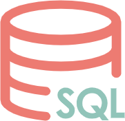

SQL教程（从入门到精通）
SQL 是 Structured Query Language 的缩写，译为“结构化查询语言”。SQL 是一种数据库操作语言，用来检索和管理关系型数据库中的数据，比如插入数据、删除数据、查询数据、创建和修改表等。
本 SQL 教程提供了 SQL 的基础用法和高级概念，语言简练紧凑，将带您快速入门 SQL。
为什么要学习 SQL？
SQL 是关系型数据库的标准语言，所有的关系型数据库都支持 SQL，比如 MySQL、Oracle、SQL Server、MS Access、DB2 等。不学习 SQL，就没法使用关系型数据库。
注意，SQL 仅仅是一种查询语言，它不是数据库，要想使用 SQL，您需要安装一款数据库。
有些数据库在标准 SQL 的基础上进行了扩展或者裁减，形成了不同的“方言”，比如：
- SQL Server 使用 T-SQL；
- Oracle 使用 PL/SQL；
- MS Access 使用的 SQL 被称为 JET SQL。
SQL 能做什么？
如前所述，SQL 是数据库的标准查询语言，下面将为您列出 SQL 的一些具体应用：
- SQL 可以创建和删除数据库；
- SQL 可以创建、修改和删除数据表；
- SQL 可以向表中插入数据，或者从表中删除若干条数据；
- SQL 可以根据条件从表中查询数据；
- SQL 可以在数据库中创建视图、存储过程；
- SQL 可以设置用户对数据库的使用权限；
- SQL 可以定义函数和触发器。
读者
本 SQL 教程是为初学者准备的，将为您讲解 SQL 的基本概念和高级用法，阅读本 SQL 教程后，您将对各种 SQL 命令有所了解。
本教程配有恰当的实例，以帮助您进一步学习 SQL 命令。
阅读条件
在开始练习本教程给出的各种示例之前，您需要了解什么是关系型数据库，并安装一款常用的数据库（本教程示例使用 MySQL 测试通过）。如果您掌握了一种计算机编程语言，那再好不过了。
关注公众号「站长严长生」，在手机上阅读所有教程，随时随地都能学习。
不定期发布学习路线+书籍文档+优质视频，为初学者指点迷津。
绑定网站登录功能，再也不用担心密码丢失。
编程11年，建站10年，创业7年，写作6年，既有硬知识，也有软技能。
长期更新，坚持原创，敢说真话，凡事有态度。

微信扫码即可关注